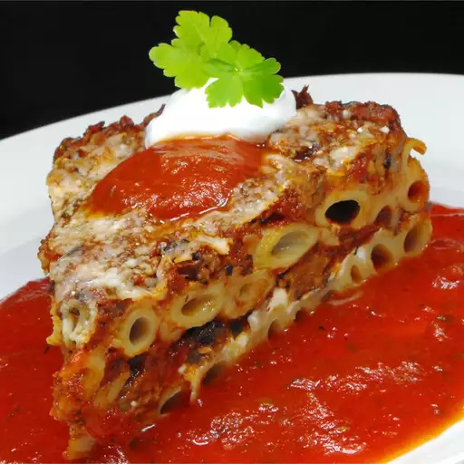

Three Cheese Baked Pasta

Description
This hearty dish always gets rave reviews. Everyone who tries it loves it! Make it a part of your meal today!
Ingredients
- 1 pound uncooked pasta
- 1 pound ground beef
- 1 onion, chopped
- 6 ½ cups tomato pasta sauce
- 6 ounces provolone cheese, thinly sliced
- 1 ½ cups sour cream
- 6 ounces mozzarella cheese, shredded
- ½ cup grated Parmesan cheese
Steps
- Bring a large pot of lightly salted water to a boil. Cook pasta in boiling water until al dente. Drain.
- Meanwhile, cook ground meat and onion in a skillet over medium heat, stirring frequently, until meat is browned. Stir in pasta sauce, reduce heat, and simmer for 15 minutes.
- Preheat oven to 350 degrees F (175 degrees C). Lightly grease a 9x13 inch baking dish. Layer the ingredients in the prepared baking dish as follows: half of the cooked pasta, all the provolone cheese, all the sour cream, half of the sauce mixture, remaining pasta, mozzarella cheese, and remaining sauce mixture. Top with grated Parmesan cheese.
- Bake in preheated oven for 30 minutes, or until bubbly.